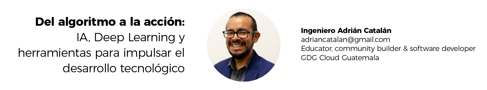

1 Del algoritmo a la acción: IA, Deep Learning y herramientas para impulsar el desarrollo tecnológico

1.1 Entrevista
¿Quién es Adrián Catalán?
Soy un aprendiz eterno de la vida, siempre en busca de conocimiento. Dirijo el laboratorio de innovación en la Universidad Galileo desde hace más de 10 años, y también ofrezco consultorías en machine learning y desarrollo móvil. He organizado meetups y gracias a mi cercanía con Google, soy parte del programa de developer experts. Además de mis especialidades técnicas, tengo certificaciones en áreas no técnicas como sommelier, barista, bartender, y coach de vida, e incluso he explorado la comedia con stand up.
Esta diversidad de experiencias me ha proporcionado una perspectiva holística y humana. Sigo trabajando en tecnología y disfruto colaborar con personas. Recientemente, me apasiona el montañismo y el ultra maratón, lo que refleja mis intereses variados y el deseo de compartir mis habilidades tanto técnicas como personales.
¿Cómo se involucró en la industria tecnológica?
Estudié Ingeniería de Sistemas y he explorado diversas áreas en la industria tecnológica, evitando entornos muy burocráticos como los bancos, que no me interesan. He trabajado en seguridad informática, redes, desarrollo web, móvil y más recientemente en machine learning. Desde mis años universitarios, he estado involucrado en comunidades tecnológicas, como LUGUSAC y la Comunidad de Microsoft, y más tarde fundé el GDG, lo que me ha permitido conectar con muchos perfiles. Me apasiona compartir lo que aprendo y he sido conferencista en eventos nacionales e internacionales. Espero seguir involucrado con la comunidad por muchos años más.
¿Qué son las comunidades tecnológicas y cómo pueden aportar al país?
Las comunidades tecnológicas, o meetups, son espacios en Latinoamérica para reunir a personas con intereses similares en tecnología y compartir conocimientos, han crecido y adquirido su propia identidad. Por ejemplo, si me interesa Firebase, busco a otros que lo utilicen para colaborar, organizar eventos y proyectos. Estas comunidades son cruciales para el crecimiento del ecosistema de innovación y tecnología de un país, ofreciendo oportunidades de aprendizaje y networking, lo que impacta positivamente en el desarrollo económico y social. En resumen, se trata de reunir a personas con intereses comunes y fomentar la colaboración.
¿Tecnologías en las que actualmente desarrolla sus proyectos?
Tengo una buena relación con Google, aunque no soy empleado, solo me cubren los gastos de viaje, lo que permite acercarme a diferentes comunidades. Prefiero las tecnologías de Google, especialmente Google Cloud Platform (GCP), debido a su amplia oferta y su eficacia para acelerar prototipos y productos. He trabajado mucho con Firebase y tengo experiencia en Android, aunque también he explorado iOS.
Recientemente, me he enfocado en machine learning, usando herramientas como TensorFlow y Vertex. Creo que es crucial que la innovación técnica no solo sea efectiva, sino que también mejore la calidad de vida de las personas. Aunque me inclino por las tecnologías de Google, reconozco el valor de otras alternativas y estoy abierto a discutir diferentes implementaciones en mis consultorías.
¿A qué se refiere con “Del Algoritmo a la Acción”?
Los algoritmos son fundamentales en cualquier producto tecnológico, y como ingenieros, trabajamos constantemente con ellos. Es crucial ir más allá de la teoría y enfocarse en implementar esos conceptos de manera práctica. El verdadero valor de un algoritmo radica en su aplicación y en el impacto positivo que puede tener en la vida de las personas, las empresas y la sociedad. Comenzamos con una idea teórica que se transforma en acción, dando lugar a soluciones concretas en productos tecnológicos que mejoran la calidad de vida.
¿Qué es la IA para el Ing. Adrián Catalán?
Me apasiona la inteligencia artificial, la veo como un concepto amplio que abarca el uso de tecnología para realizar tareas que antes se consideraban exclusivas de los humanos, con resultados igual o mejores. Detrás de esto hay diversos algoritmos, técnicas, hardware y software, siendo el machine learning y las redes neuronales algunas de las implementaciones más comunes.
Considero que la inteligencia artificial es una herramienta que complementa al ser humano, no lo reemplaza. Mejora la productividad y permite enfocarse en la innovación, optimizando recursos como dinero, esfuerzo y tiempo. Al dedicar menos a tareas repetitivas, podemos centrarnos en lo importante, lo que, al final, contribuye a una mejor calidad de vida.
¿Cómo nace el concepto de Deep Learning?
La inteligencia artificial (IA) como mencionaba es un concepto amplio, comparado a una sombrilla, bajo la cual se encuentra el aprendizaje automático (machine learning), que utiliza datos históricos para hacer predicciones a través de modelos. Dentro de machine learning, las redes neuronales, que simulan de manera básica el funcionamiento del cerebro humano, emplean operaciones matemáticas complejas para minimizar errores.
El deep learning, una subcategoría de machine learning, se caracteriza por tener múltiples capas (capas ocultas) que aumentan la profundidad del modelo. Aunque estas técnicas se exploraron en los años 80, no se pudieron desarrollar adecuadamente hasta alrededor de 2010, cuando se mejoraron gracias a la disponibilidad de más datos y poder computacional. Los avances actuales en IA se destacan en el procesamiento de lenguaje natural y la visión por computadora.
La IA se puede dividir en tres etapas: la específica (en la que estamos ahora), la general (a la que aspiramos) y la superior (más inteligente que el ser humano). Aunque se considera que la IA actual parece tener características de inteligencia general (como en modelos como chatGPT y Gemini), la realidad es que estamos en la etapa específica. En resumen, el deep learning utiliza redes neuronales para abordar problemas de machine learning, que a su vez son parte de la inteligencia artificial.
¿En las etapas de desarrollo tecnológico de qué herramientas nos podemos apoyar?
Soy un firme defensor de utilizar las herramientas disponibles en el momento, basándome en mis conocimientos, por muchos años di clases de estructuras de datos, compiladores y sistemas operativos; conocer las bases es clave para construir soluciones tecnológicas. No reinvento la rueda en cada proyecto; aprovecho plataformas colaborativas y la nube, como Firebase y Google Cloud, para escalar mis soluciones.
En el ámbito de inteligencia artificial, me gusta TensorFlow, aunque también existen opciones como PyTorch. Aunque inicialmente no me gustaba Python, aprendí a usarlo para IA, dado que otros lenguajes como Kotlin o Ruby tienen limitaciones en este campo. La comunidad también es crucial al elegir herramientas.
Recomiendo un stack que incluya TensorFlow y herramientas como Pandas y NumPy, montados en la infraestructura de la nube de Google, el uso Vertex para trabajar con APIs como Gemini. En resumen, se trata de conocer los fundamentos, utilizar lo que está disponible y resolver problemas de manera eficiente, buscando un producto final listo lo más rápido posible.
Roles que pueden involucrarse durante las etapas de desarrollo como Machine Learning
La respuesta sobre roles en machine learning es complicada debido a la tendencia y lo novedoso de la industria. Al igual que en la seguridad informática, donde los roles no siempre son claros, en machine learning a menudo se confunden las funciones de un científico de datos y un ingeniero de machine learning.
El científico de datos analiza datos para tomar decisiones, mientras que el ingeniero de machine learning se enfoca en automatizar estos procesos. En Guatemala, por ejemplo, es común ver equipos de ciencia de datos compuestos por ingenieros industriales y de sistemas.
Es esencial que cada persona entienda sus intereses y sepa comunicarlos a los empleadores. Así como en seguridad informática se ha integrado el concepto de DevSecOps, en machine learning se habla de MLOps, aunque su implementación varía entre empresas.
La limpieza de datos es crucial y a menudo complicada, por lo que contar con un ingeniero de datos es vital. En resumen, los roles se dividen así: el ingeniero de machine learning desarrolla modelos, el ingeniero de datos maneja y limpia los datos, y el científico de datos los analiza. Identificar intereses y buscar un buen ajuste con la empresa es clave para el éxito en este campo.
¿Dónde es un buen comienzo para aprender? ¿Cómo iniciar, nos puede plantear escenarios?
Como ingeniero de sistemas, creo que sería ideal tener más profesionales en este campo, aunque entiendo que ir a la universidad puede ser complicado en nuestro país. La universidad pública presenta desafíos de horarios y costos de oportunidad, y las privadas tienen sus propios costos.
Mi recomendación es optar por una institución educativa que ofrezca posgrados o cursos, o explorar plataformas en línea como Coursera, edX o Udemy. No todos aprendemos de la misma manera, así que es crucial encontrar el método que mejor se adapte a cada uno. Personalmente, me gusta aprender de forma práctica, como lo proponen cursos de Andrew Ng y Jeremy Howard, que ofrecen enfoques tanto teóricos como prácticos con deeplearning.ai y Deep Learning for coders.
Para quienes deseen trabajar en machine learning, es importante aprender los conceptos básicos y aplicarlos a proyectos reales lo más pronto posible. Esto permite un aprendizaje más efectivo, ya que la experiencia práctica en la industria es fundamental. Recursos como deeplearning.ai, TensorFlow y PyTorch son excelentes puntos de partida. En resumen, enfóquense en tecnologías alineadas con sus intereses y busquen aplicarlas en proyectos reales para adquirir un aprendizaje contextual relevante.
¿Seguirá evolucionando la IA a como se conoce en la actualidad?
Es impresionante cómo ha avanzado la inteligencia artificial en los últimos años, especialmente con la inteligencia artificial generativa, que comencé a explorar durante la pandemia. En solo cuatro años, hemos pasado de los primeros acercamientos, por ejemplo, el uso de redes neuronales como Diffusion para generar imágenes, a una adopción masiva en diversos sectores, incluyendo salud y educación.
Este avance implica que quienes trabajamos en este campo debemos desarrollar estrategias para automatizar y personalizar procesos, considerando su impacto en diferentes industrias. La evolución de la inteligencia artificial debe ir de la mano con la adaptación humana a estos recursos.
Es crucial que este proceso sea continuo, con aprendizaje y retroalimentación, para asegurar que tanto la tecnología como las personas evolucionen y se adapten a las necesidades cambiantes. Así que la respuesta es sí, la inteligencia artificial seguirá evolucionando, pero quiero enfatizar que no solo lo hará la evolución técnica, sino que también necesitamos un desarrollo humano que permita integrar estas tecnologías de manera efectiva.
Mensaje final del Ing. Adrián Catalán
Mi enfoque siempre se centra en la acción: es crucial aplicar lo aprendido en la práctica. Actualmente, estoy en un doctorado en innovación y educación, y además, estoy estudiando para convertirme en coach a ultradistancia y nutricional. Lo que aprendo lo pongo en práctica en mí mismo, ya que creo que el conocimiento debe transformarse en cambios concretos que mejoren la calidad de vida, no solo la mía, sino también la de los demás.
Es esencial cerrar la brecha entre el talento crudo y las habilidades necesarias para tener un impacto real, ya sea en nuestras vidas, empresas o comunidades. Todos debemos entender la inteligencia artificial y su impacto en nuestras vidas, aunque no todos seamos expertos en redes neuronales. La clave es aprender a aplicar estas herramientas, especialmente en inteligencia artificial, y hacerlo a través de la acción.
Mi mensaje final es un llamado a la acción: debemos comprometernos a aprender algo nuevo, especialmente en el ámbito de la inteligencia artificial, y ponerlo en práctica lo antes posible para mejorar nuestra calidad de vida y la de quienes nos rodean.